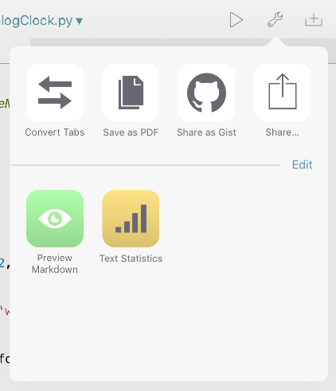

This page provides an overview of Pythonista’s user interface, and also contains some useful tips and tricks to help you get the most out of it.
Pythonista is divided into three panels: The script library, the code editor, and the interactive prompt, which also contains the documentation viewer. You can switch between these panels with left and right swipe gestures.
The script library shows all the scripts you’ve written and those that are included as examples. You can either view them as a list of file names, or as code snippet previews. The view mode can be changed by tapping the ... button.
To create a new script, tap the + button at the bottom of the file browser. This will open the template picker to select the type of file, and its name.
To delete scripts, or move them to a different folder, tap the Edit button. Deleted scripts can are moved to the special Trash folder.
The script library also shows non-Python files, e.g. data files that your scripts create or work with. For many file types, a preview can be shown, and you can also open them in a different app on your device.
The interactive prompt is the easiest way to get started with Python. Every time you enter a line of code, it is executed immediately, so you get quick feedback and can experiment with the syntax. Even if you know (almost) nothing about Python, you’ll be able to use the prompt as a powerful calculator.

You can get to the prompt at any time with a left swipe gesture. This area is also used for text output of any scripts that you run and for keyboard input.
When you enter code, completions are suggested automatically.
The console’s output area can also show images, e.g. when using the PIL (Python Imaging Library) module, or matplotlib.
Tip
The Pythonista-specific console module allows you to modify the console’s output font, colors, and to clear the text output programmatically.
If you’ve used any programming editor before, you’ll probably feel right at home in Pythonista. For the most part, the editor behaves very similar to any other text area on iOS, but there are some additional features that might not be obvious at first.
First off, the keyboard contains additional keys with special characters that are useful for programming. These additional keys also work as a gesture area: You can slide across them with your finger to move the cursor, which makes it easier to position it precisely.

For navigating in complex scripts, you can tap the name of the script at the top of the screen, to get a popup of all functions, classes, and methods. You can also rename files from this popup.
When you use the scene, ui or sound modules, you can insert names of built-in images, sound effects, and colors using the [+] button at the top.
One very powerful feature of the editor is that it is programmable itself. You can use the editor module for replacing text, positioning the cursor, etc. You can then add your own scripts to the action (“wrench”) menu, so that you can run them directly from the editor when working on your code.
Tap the Edit button in the editor actions menu to add your own scripts.
Have a look at the documentation about the editor module for some interesting examples.
Tip
Tap with two fingers to select an entire line.
You can connect a Bluetooth keyboards to your iOS device from the system preferences. Pythonista supports all the common keyboard shortcuts for text editing, and a few additional ones.
Common keyboard shortcuts (these work in all text areas on iOS):
Pythonista keyboard shortcuts:
You can also view the list of available keyboard shortcuts by pressing and holding the Cmd key. Note that some shortcuts only work when the editor has keyboard focus.
Pythonista includes an app extension that allows you to run Python scripts from within other apps. The extension is invoked from the iOS share sheet that is available in many apps.

Before using the extension for the first time, you need to enable it. To do this, tap the “More” button at the bottom of the share sheet, then turn on the switch for “Run Pythonista Script”.
The extension contains an editable collection of shortcut icons (similar to the “wrench” menu in the editor) to run your favorite scripts quickly, but there’s also a basic code editor, and an interactive console to enable tweaking your code directly in the extension. Apps that support the share sheet typically pass some kind of data to it, e.g. the current page’s URL in Safari, text in Notes, location data in Maps, or images in Photos. You can use the appex module to access this data.
Pythonista can be launched from other apps using the pythonista3://... URL scheme. For more information and a reference of the parameters you can pass, please read the chapter The Pythonista URL Scheme.
Pythonista includes a Today widget for running scripts directly in Notification Center. You can configure the widget script in the settings. It will then be run whenever Notification Center is opened.
Please note that the widget script has to be very efficient in terms of memory use because the amount of RAM that widgets get on iOS (before they are terminated) is very limited. If you see a “could not load” message in the widget, or if the widget remains empty, try something simpler.
The widget only supports Python 3, and only a limited subset of Pythonista’s modules is available. In particular, the scene module and anything to do with dialogs/alerts and keyboard input are unavailable. The ui module is available in general (and essential for making widgets), but some UI classes cannot be used because they are too resource-heavy (e.g. ui.WebView).
A widget’s UI should ideally consist of buttons, labels, and image views only. For showing a UI in the widget, the appex module has a appex.set_widget_view() function. For very simple needs, you can also print text in the widget (but advanced console output features, e.g. console.set_color() etc. are not available).